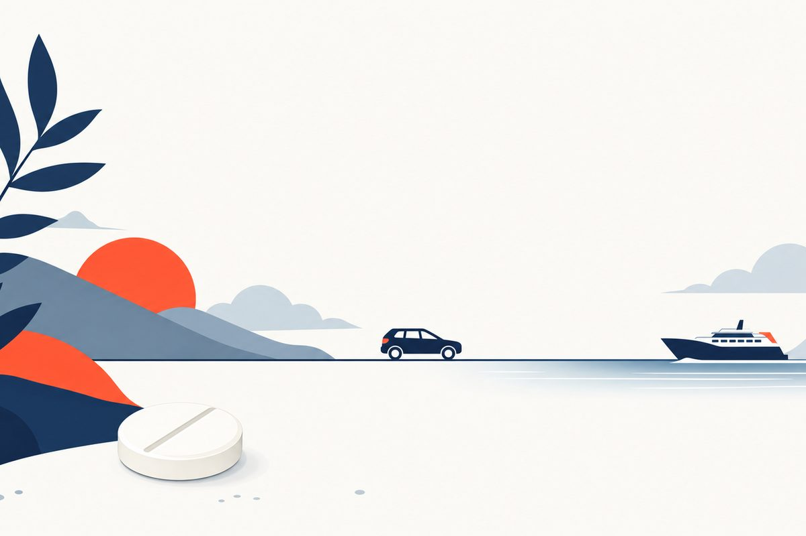

Motion Sickness: Patches, Pills & 3 Safety Checks
A physician’s adult guide to active ingredients, pretravel timing, heat warnings, new evidence and when dizziness needs a different assessment.

Which motion-sickness medicine should an adult choose before travel?
Choose prevention by the active ingredient, time before travel and safety risks. A scopolamine patch is applied at least 4 hours ahead and worn for up to 3 days. Meclizine and dimenhydrinate have different directions and can cause drowsiness. Avoid alcohol and doubling up medicines. Medicines generally work best before motion starts. Severe confusion, overheating, eye pain or new neurological symptoms need direct assessment, not another dose.[1][2][4][5][6][13]
Key Takeaways
- Check three things before travel: the active ingredient, the time it needs before exposure and your personal safety risks. No one option is best for every adult.[1][2][4][5][6][9]
- For motion sickness, the scopolamine label says one patch at least 4 hours ahead, worn for up to 3 days. Do not cut it or wear more than one at a time.[2][3]
- Dramamine Original Formula contains dimenhydrinate. Dramamine Less Drowsy and the cited Bonine product contain meclizine; different brand names can duplicate the same drug.[4][5][6]
- “Less drowsy” does not mean no drowsiness. Alcohol and other sedating medicines can increase impairment; a trial dose does not authorize unsafe driving.[1][2][3][4][5][6][11]
- Scopolamine carries a heat warning. Overheating or reduced sweating can be serious, and effects may persist after removing the patch.[2][3]
- Nereus is approved for prevention of motion-induced vomiting in adults. Its indication is narrower than a claim to stop every symptom, and its label still warns about impaired alertness.[11][12]
- Persistent unexplained dizziness, new neurological symptoms, severe confusion or eye pain needs clinical assessment, not automatic extra motion-sickness medicine.[1][2][3][10][13]
Motion sickness medicine: which option fits an adult’s trip?
Which motion-sickness medicine should I choose?
Start with the active ingredient, the time before departure and the risks that matter to you. A patch may be convenient for a longer exposure, while a tablet may suit a shorter trip, but convenience is not the same as safety. Your previous response, glaucoma or urinary history, other medicines and need to remain alert can change the choice.[1][2][4][5][6][9][10]
Motion-sickness prevention usually works better when planned before the provoking motion begins. Once nausea is established, gastric slowing can make oral absorption less reliable. That does not mean an OTC product's treatment indication disappears; it means the evidence and practical timing are strongest for prevention rather than an assumed instant rescue.[1][7][8][9][10]
There is no proven best medicine for everyone
Evidence supports scopolamine and selected first-generation antihistamines for prevention, but comparisons between them are limited. The 2022 Cochrane review judged antihistamine-versus-scopolamine prevention evidence very uncertain. A stronger personal impression from a past trip can help a discussion, but different routes, waves and tasks make informal comparisons unreliable.[1][7][8][9]
| Option | Label-directed timing or use | Main decision boundary |
|---|---|---|
| Scopolamine patch, prescription | At least 4 hours before the effect is needed; one intact system for up to 3 days. | Heat, eye, urinary and cognitive risks matter; not an instant rescue. |
| Dimenhydrinate, cited Original Formula | First dose 30 to 60 minutes before activity; repeat only at its actual labeled interval. | Marked drowsiness and alcohol/other sedative warnings. |
| Meclizine, cited Less Drowsy or Bonine | Once-daily directions; pretravel timing differs between the cited labels. | Less drowsy does not mean no drowsiness; two brands can duplicate the same ingredient. |
| Tradipitant, Nereus prescription | Prescriber-selected single dose about 60 minutes before exposure, with fasting directions. | Prevention of motion-induced vomiting in adults; impaired alertness and interactions still matter. |
This is a comparison of options and decision limits, not a self-prescribing menu or a claim of equal effectiveness. Read the product-specific sections and actual label before using a medicine.[1][2][3][4][5][6][11]
For some adults, suitable environmental measures are enough. Others may need a clinician-reviewed prescription or a labeled OTC option. A new prescription drug may offer another route to a specific goal, but approval is not proof that it is the best drug for every traveler or that a particular virtual service provides it.[1][9][10][11][12]
What causes motion sickness, and what symptoms are typical?
Motion sickness is a response to real or perceived motion. A common explanation is conflict between information from the eyes, the inner-ear balance system and the body's sense of movement. Reading in a moving car, looking at a screen on a boat or watching virtual motion while physically still can produce different versions of that mismatch.[1][9][10]
Nausea is only part of the symptom pattern
Typical features include nausea, vomiting, pallor, sweating, dizziness, yawning and sometimes fatigue or drowsiness. The pattern and trigger are important. A familiar episode beginning with a ride is different from a first episode of severe spinning while sitting still, especially with neurological or hearing symptoms.[1][9][10][13]
Car sickness, sea sickness and screen-related sickness
The setting changes the stimulus but does not automatically identify a different disease. Looking at a stable horizon, reducing unnecessary head movements and avoiding close visual tasks may help reduce conflicting signals. A passenger can experiment with a position that is safe and less provocative; a driver must prioritize safe driving and should not use a sedating medicine as permission to continue.[1][9][10]
Do not diagnose every dizzy spell as travel sickness. Migraine, inner-ear disorders, a medication effect and other conditions can overlap. A guide cannot replace an examination when the trigger is unclear, symptoms are new or the presentation is unusual.[1][9][10][13]
What to tell the clinician
Describe the trigger, when symptoms start and whether you are well between exposures. Include what you have already taken, any unusual reaction, your other medicines and the tasks you must perform during travel. The goal is not merely to stop vomiting; it is to choose a plan that does not make alertness, falls, heat exposure or another medical problem worse.[1][2][9][10]
Meclizine vs Dramamine: compare the ingredient, not the brand
The comparison can be confusing because “Dramamine” is a brand family, not one drug. In the labels cited here, Dramamine Original Formula contains dimenhydrinate 50 mg, while Dramamine Less Drowsy contains meclizine 25 mg. Asking whether meclizine is better than “Dramamine” is incomplete until you know which product is on the shelf.[4][5]
Dramamine Original Formula: dimenhydrinate
The cited adult directions are one or two 50 mg tablets every 4 to 6 hours, with no more than eight tablets in 24 hours, unless a doctor directs otherwise. Its first dose is taken 30 to 60 minutes before activity. These are that product's label instructions, not permission to take the maximum or a recommendation for every traveler.[4]
Dramamine Less Drowsy: meclizine
The cited product contains 25 mg of meclizine per tablet. Its adult directions are one or two tablets once daily, with the first dose 30 to 60 minutes before activity. It still warns that drowsiness may occur and that alcohol, sedatives and tranquilizers can increase drowsiness. Do not confuse a different interval with a guarantee of better performance.[5]
The longer dosing interval may be convenient, but your choice should also consider tolerability and contraindication or precaution history. Neither product is an all-purpose treatment for unexplained vertigo, and a travel response does not establish the cause of dizziness outside travel.[1][4][5][9][10][13]
Do not turn brand comparison into a stacking plan
Adding another familiar brand can add the same drug or another sedating drug. If one medicine did not seem to help, check its ingredient, timing and directions with a pharmacist or clinician before taking another. Combining products is not a proven shortcut to better protection and can increase unwanted effects.[1][2][4][5][6]
Dramamine vs Bonine: when are they the same medicine?
The cited Bonine chewable contains meclizine 25 mg, the same active ingredient and per-tablet strength as the cited Dramamine Less Drowsy product. Dramamine Original Formula is different: it contains dimenhydrinate. Read the Drug Facts panel rather than relying on the brand name, packaging color or the words “less drowsy.”[4][5][6]
| Exact cited product | Adult label example | Timing and important limit |
|---|---|---|
| Dramamine Original Formula, dimenhydrinate 50 mg | 1 to 2 tablets every 4 to 6 hours; maximum 8 tablets in 24 hours unless directed otherwise. | First dose 30 to 60 minutes before activity. Marked drowsiness may occur. |
| Dramamine Less Drowsy, meclizine 25 mg | 1 to 2 tablets once daily, or as directed. | First dose 30 to 60 minutes before activity. Drowsiness may occur. |
| Bonine chewable, meclizine 25 mg | 1 to 2chewable tablets once daily, or as directed. | Dose 1 hour before travel. Chew or crush completely as this label directs. |
These are label examples for the exact products referenced, not every item sold under those brands or a personalized recommendation. Your own strength, formulation, instructions and medical advice govern. All three warn against alcohol and require care with alertness and other sedating medicines.[4][5][6]
Same ingredient means the doses count together
Do not take Bonine plus Dramamine Less Drowsy as if two brand names were two unrelated treatments. Tell a pharmacist about every product you are considering, including sleep medicines and cold preparations. A combination that duplicates meclizine or adds sedation can be inappropriate even when each box is sold without a prescription.[1][4][5][6]
A package label is also the place to confirm tablet handling. Some chewables are intended to be chewed or crushed rather than swallowed whole. If the directions are unclear or differ from an online table, use the actual package and ask a pharmacist instead of guessing.[6]
Motion-sickness patches: how do you use scopolamine?
A US scopolamine transdermal system is a prescription medicine for prevention of motion-sickness nausea and vomiting in adults. It is not an instant remedy for every cause of nausea. The cited Transderm Scop label directs one system on the hairless area behind one ear at least 4 hours before the effect is needed, worn for up to 3 days.[2][3]
The 4-hour instruction is a minimum, not a promise
The label's “at least 4 hours” instruction and CDC's pharmacology table are not identical measurements: CDC lists an estimated 6-to-8-hour onset for the patch. Plan with the prescriber before departure rather than treating four hours as guaranteed full protection. Do not add extra patches to compensate for late application.[1][2][3]
The system contains drug in a reservoir and is formulated to deliver approximately 1 mg over 3 days. The amount contained and the amount delivered are different numbers. Do not infer that a differently described reservoir strength authorizes a different number of patches or cutting a patch.[2]
- Before the trip: Confirm suitability, directions and an application time at least 4 hours before the effect is needed. The patch is preventive and can impair alertness; suitability is not established by convenience alone.
- Apply: One intact system behind one ear on suitable clean, dry skin. Do not cut it. Wear only one at a time; do not create your own partial-patch dose.
- Handle: Wash and dry hands after applying; avoid touching the system and then the eyes. Transferred drug can dilate a pupil or blur vision.
- Remove or replace: Use for up to 3 days. If continuing is prescribed, remove the old system and use a new one behind the other ear. Do not stack systems. Wash hands and the site after removal and dispose of it safely.
- Safety interruption: Remove before MRI; respond to eye pain, urinary difficulty, confusion or overheating as instructed. Some effects can persist after removal; severe symptoms need direct medical attention.
This summarizes the cited label; it does not replace the prescription, patient leaflet or clinician's advice. A child should not use an adult's patch, and no pediatric prescribing pathway is provided here.[2][3]
Testing tolerability before a trip
CDC suggests considering a trial before departure because individual responses vary. Such a trial still needs a safe setting and the prescribed directions. Do not test a medicine for the first time while driving, operating equipment or undertaking another task in which dizziness or impaired vision would be dangerous.[1][2][3]
Scopolamine patch side effects: what should you watch for?
Dry mouth, drowsiness and visual effects are important counseling points. Confusion, difficulty urinating and certain eye symptoms need more than reassurance that a patch is convenient. The prescriber should review your other medicines and relevant history before use, particularly if you have glaucoma, impaired urine flow or a vulnerability to cognitive effects.[1][2][3][9][10]
Angle-closure glaucoma is not the same as every glaucoma diagnosis
The US label specifically contraindicates angle-closure glaucoma and a history of hypersensitivity to scopolamine or related belladonna alkaloids. Open-angle glaucoma requires appropriate monitoring and clinician review. Do not relabel all glaucoma as the same contraindication, or decide that an existing glaucoma prescription makes the patch automatically safe.[2][3]
Eye pain, red eyes, blurred vision or halos around lights can signal an urgent problem. Remove the system and obtain medical advice as the label directs; severe symptoms need direct assessment. Avoid touching your eyes after handling the patch, and wash hands after application or removal.[2][3]
The heat warning matters on more than beach holidays
FDA added a hyperthermia warning in 2025. Scopolamine can reduce sweating and raise core temperature; external heat or hot conditions can worsen the problem. Overheating and reduced sweating can be serious, and symptoms may persist after removal because absorption can continue through the skin.[2][3]
If you become unusually hot or stop sweating in warm conditions, remove the patch and contact a healthcare professional promptly. Severe confusion, loss of consciousness or other severe illness is an emergency, not a reason to wait to see whether another seasickness dose helps. Do not assume drinking water cancels a drug-related heat risk.[2][3]
After removal is not always after the effect
Following several days of use, withdrawal symptoms can begin 24 hours or more after removal. The label lists nausea, vomiting, dizziness, balance disturbance and other symptoms. A post-trip illness may therefore need assessment rather than an automatic diagnosis of continuing motion sickness or a self-directed restart.[2][3]
How can you stop motion sickness once it starts?
Reduce or stop the provoking stimulus when it is safe to do so. A passenger may benefit from looking toward a stable horizon, putting away a screen, minimizing unnecessary head movement or lying back with eyes closed in a safe position. Controlled breathing and a more comfortable environment can be useful measures while you reassess the situation.[1][9][10]
Prevention evidence is not an instant-rescue guarantee
The 2011 Cochrane scopolamine review included 14 trials with 1,025 participants and found benefit versus placebo for prevention. It did not identify randomized trials treating already established symptoms. The 2022 antihistamine review also found no studies reporting resolution or reduction of existing symptoms. These are evidence gaps, not a claim that every labeled treatment is useless once nausea begins.[7][8]
Oral medicines can be harder to absorb reliably after motion sickness develops, which is another reason to plan ahead. Repeated vomiting should prompt a safety and hydration assessment rather than an unplanned sequence of extra doses. Follow the product's directions and ask for advice if you cannot keep fluids down or symptoms are severe.[1][3][4][5][6][9][10][13]
Do not keep driving through impairment
If dizziness, visual disturbance or sedation makes a task unsafe, stop that task safely and get help. A medication that reduces vomiting may still impair judgment or coordination. Feeling less nauseated does not establish that it is safe to drive or operate machinery.[1][2][4][5][6][11]
When ordinary symptom care is not enough
New double vision, speech difficulty, limb weakness, inability to walk normally or a severe unusual headache needs urgent direct assessment. Such symptoms should not be explained away as a rough boat ride or an expected medication effect without evaluation.[1][10][13]
How long does motion sickness last?
Duration depends on the motion, the person and whether medication or another condition is contributing. Symptoms often ease after the provoking exposure stops, but there is no single dependable recovery clock for every traveler. Persistent rocking, recurring spinning or symptoms unrelated to travel should not be indefinitely self-treated as ordinary seasickness.[1][9][10][13]
Do not turn a review's range into a personal deadline
The 2019 overview gives differing recovery descriptions in separate sections, including 24 hours and 72 hours after a trigger ends. Those are not a precise forecast for an individual and do not justify delaying care for neurological symptoms, dehydration or medication toxicity. This guide does not promise that everyone is well by a particular hour.[10][13]
Fatigue and drowsiness can accompany motion sickness and may outlast the most obvious nausea. Medicines can also produce drowsiness, blurred vision or dizziness. Tell the clinician whether symptoms changed after a dose or after removing a patch, rather than assuming every sensation has one cause.[1][2][3][4][5][6][9][10]
Persistent symptoms deserve a different question
Vertigo means a spinning sensation and has causes other than motion sickness. A clinician may need a balance, neurological, hearing or medication assessment. Persistent post-travel symptoms, recurrent attacks or illness without a clear motion trigger are outside a standing same-day-care refill plan.[1][10][13]
Do not try to diagnose BPPV, migraine or a persistent post-disembarkation syndrome from this page alone. Symptoms can overlap, and a video history cannot supply every examination finding. The practical next step is appropriate evaluation, not simply choosing a longer-lasting anti-nausea product.[1][10][13]
How can you prevent motion sickness without relying only on medicine?
Environmental measures are an important part of prevention. Reduce conflicting visual information by looking outward rather than reading a close screen, use a position with less provoking movement when possible, and consider a safe reclining position with eyes closed if symptoms start. Adequate rest and avoiding alcohol may also help the overall plan.[1][9][10]
| Approach | Reasonable expectation | What not to claim |
|---|---|---|
| Horizon or stable outside view | May reduce visual conflict during real travel. | It guarantees protection in every passenger or every environment. |
| Avoid close reading and unnecessary screens | Can reduce a common provoking visual task in a moving vehicle. | Every type of motion sickness is caused only by reading. |
| Position, head movement and controlled breathing | May help comfort and reduce provocative movement or autonomic symptoms. | These measures replace an assessment for unusual dizziness. |
| Habituation with repeated exposure | Can help, but adaptation is stimulus-specific and may take time. | A single trip, a commercial course or this page guarantees adaptation. |
| Ginger or acupressure bands | Evidence is weak or inconsistent; comfort for one person is not proof of reliable prevention. | Pregnancy-nausea studies prove protection against travel sickness, or a band is equivalent to a drug. |
The table summarizes general measures and evidence limits, not a formal rehabilitation program. It does not promise that every non-drug option works equally well.[1][9][10]
Does ginger help motion sickness?
Some small studies and reviews discuss ginger, but CDC describes the evidence for diets, supplements and ginger as weak and contradictory. Pregnancy-nausea studies answer a different question and are not used here to establish travel-sickness efficacy. An optional supplement should not replace a reliable plan for severe susceptibility or a review of interactions and pregnancy concerns.[1][9][10]
What about wristbands?
CDC reports that laboratory trials of acupressure bands have not shown them to outperform placebo. Reviews describe mixed studies and methodological limitations. A person may find a band comforting, but the evidence does not justify presenting it as a proven substitute for a suitable preventive medicine.[1][9][10]
Can you drink alcohol or combine motion-sickness medicines?
The cited scopolamine, dimenhydrinate and meclizine information warns about alcohol and impaired alertness. Combining them with sedatives, tranquilizers or other medicines with similar effects can increase problems. Avoid using alcohol to settle travel nerves while also taking a medicine that can affect mental or physical performance.[1][2][3][4][5][6]
Can you take meclizine and Dramamine together?
First identify which Dramamine product you mean. If it is the cited Less Drowsy product, it already contains meclizine, so another meclizine product duplicates the ingredient. Original Formula contains dimenhydrinate, but that does not make combining it with meclizine an automatic safe or effective plan. Ask a pharmacist or clinician to review the whole list before combining products.[1][4][5][6]
Include sleep aids, cold medicines, medicines for pain or anxiety and any prescribed drugs when requesting that review. Do not add a second agent simply because a trip became rougher or you took the first dose late. The intended dose interval and personal risk still apply.[1][2][3][4][5][6]
“Non-drowsy” allergy medicine is not the same treatment
CDC states that newer, minimally sedating antihistamines such as loratadine and fexofenadine are not effective motion-sickness medicines because they do not sufficiently reach the relevant central pathways. A shared class name does not make an allergy tablet interchangeable with the motion-sickness products discussed here.[1][9][10]
Likewise, do not assume a different antiemetic treats the vestibular problem. CDC does not regard ondansetron as effective for preventing vestibular motion sickness. A drug's usefulness for another kind of nausea is not proof of the same benefit during travel.[1][9][10]
What is a practical plan for a cruise, car ride or flight?
Before departure: prepare one understandable plan
Write down the expected motion exposure, the activity you must perform and the ingredient you intend to use. Check the actual label and application or first-dose time. If a prescription or a personal-risk review is needed, arrange that in advance rather than expecting a new patch or tablet to become an instant rescue while boarding.[1][2][3][4][5][6][9]
Tell the clinician if you are a driver, operator or person responsible for another traveler's safety. A passenger's preventive choice is not automatically suitable for a safety-sensitive role. Reassess if the plan causes blurred vision, sedation or confusion even when nausea is controlled.[1][2][4][5][6][11]
During travel: reduce the trigger and monitor the medicine
Use a stable outside view when helpful, reduce close visual tasks and unnecessary head movements, and avoid alcohol. With a patch, include heat exposure and sweating in your safety awareness. Do not interpret all dizziness, dry mouth or vision changes as harmless evidence that the medicine is “working.”[1][2][3][9][10]
For a longer trip, confirm how the actual product is repeated or replaced before departure. The patch's multi-day convenience does not authorize wearing multiple systems, and a once-daily tablet is not repeated at the interval of a different product. If directions conflict or a dose was missed, ask rather than improvising.[2][3][4][5][6]
After travel: do not ignore a changed pattern
Note when the trigger stopped, when medicines were last taken and when a patch was removed. Persistent, worsening or unfamiliar symptoms may reflect a medication effect or another condition. The next step may be an examination rather than a refill, particularly if symptoms occur away from motion or affect walking, vision, speech or hearing.[1][2][3][10][13]
What is new: Nereus, current labels and the limits of comparison?
The Nereus, or tradipitant, prescribing information lists initial US approval in 2025. Its labeled indication is prevention of vomiting induced by motion in adults. That wording is narrower than treating all nausea, eliminating every motion-sickness symptom or treating an already established episode.[11]
A new drug class is not an automatic best-drug verdict
Tradipitant is an NK1-receptor antagonist. Its label directs a single prescriber-selected dose before exposure, with specific fasting instructions and a maximum of one dose in 24 hours. It can impair the abilities needed for driving or operating machinery, and strong CYP3A4 inhibitors or other CNS depressants require review. It should not be described as nonsedating.[11]
Discussing an approved option in an educational guide does not establish access, coverage or suitability for a particular virtual visit. This page does not claim that TeleDirectMD routinely provides tradipitant or substitute an online table for an individual prescribing decision.[11]
Read the endpoint and comparator
Motion Syros studied susceptible adults on boat trips and compared single doses with placebo. It did not compare tradipitant with scopolamine, meclizine or dimenhydrinate. Its reduction in vomiting does not prove superiority over those medicines, and its nausea and overall-symptom findings should not be rewritten as complete relief.[11][12]
Older reviews still inform traditional options but have real limitations. The 2022 antihistamine review included nine trials with 658 participants and mostly studied first-generation agents; its findings are not proof for every antihistamine. Older study populations, routes and settings should not be flattened into a universal ranking.[7][8][9][10]
Who needs extra caution or direct medical assessment?
Glaucoma, urinary problems and older adults
Product-specific cautions matter. The scopolamine label distinguishes angle-closure glaucoma from open-angle disease requiring monitoring, and it warns about urinary retention and cognitive effects. OTC dimenhydrinate and meclizine labels also require advice with glaucoma, difficulty urinating and certain breathing problems. Older adults may be more vulnerable to unwanted effects and should not treat OTC availability as a safety guarantee.[1][2][3][4][5][6][9][10]
Pregnancy, breastfeeding and children
Ask a clinician before choosing a motion-sickness medicine in pregnancy or while breastfeeding. The OTC labels explicitly request professional advice, and the scopolamine patient information calls for a discussion of these circumstances. This adult guide does not use pregnancy letter categories or studies of pregnancy nausea as travel-treatment evidence.[2][3][4][5][6]
No pediatric dosing or prescribing pathway is provided. A product label that includes an age below adulthood does not establish that an adult-only practice treats that age group. Do not give a child another person's patch or extend adult instructions without the appropriate clinician.[2][3][4][5][6][11]
Do not wait for a routine travel-medicine visit
Severe confusion, overheating, collapse, trouble breathing or inability to wake someone requires urgent help; call 911 for an emergency. New speech difficulty, limb weakness, double vision or severe unusual headache with vertigo requires urgent direct assessment rather than a routine anti-nausea prescription. Do not drive yourself when the illness or medicine makes driving unsafe.[2][3][10][13]
Two appropriate next steps
- For a familiar, short-term travel trigger without warning signs, start with the environmental plan and an appropriate label or clinician review before departure. Confirm the ingredient, timing and safety checks.[1][2][3][4][5][6][9]
- For persistent or unexplained dizziness, recurrent illness away from motion, a concerning medication reaction or warning signs, use direct assessment. Chronic vestibular management and repeated unexplained episodes are not an ongoing same-day-care refill pathway.[1][2][3][10][13]
Frequently Asked Questions
No single option is best for every adult. Compare the active ingredient, timing before travel and personal safety risks. Scopolamine and selected antihistamines have prevention evidence, but head-to-head comparisons are limited. Do not choose solely from a brand name or a promise of less drowsiness.[1][7][8][9][10]
Dry mouth, drowsiness and visual effects are important. Confusion, urinary difficulty, eye pain or overheating needs attention. FDA added a hyperthermia warning in 2025; effects can persist after removal. Angle-closure glaucoma is a contraindication, while open-angle disease needs appropriate review and monitoring.[2][3]
It depends on the Dramamine product. Original Formula contains dimenhydrinate in the cited label; Less Drowsy contains meclizine. Their directions and dose intervals differ, and both can impair alertness. Read the active ingredient and actual product directions before comparing or combining them.[1][4][5]
Do not combine them on your own. Dramamine Less Drowsy already contains meclizine in the cited product. Original Formula contains a different sedating antihistamine, but that does not make combining it with meclizine an automatic safe or effective plan. Ask a pharmacist or clinician to review all products.[1][4][5][6]
Reduce the provoking stimulus when safe: stop close reading or screens, use a stable view and consider a safe reclining position. Medicines work best as planned prevention; established nausea can make oral absorption less reliable. Severe or unusual symptoms need assessment rather than unplanned extra doses.[1][7][8][9][10][13]
Many episodes improve when the trigger stops, but recovery is variable and medicines can contribute dizziness or drowsiness. Do not use a fixed recovery clock to delay care for warning signs. Persistent, recurrent or unexplained symptoms away from motion need an appropriate evaluation.[1][2][3][9][10][13]
No. Nereus is labeled for prevention of motion-induced vomiting in adults, not every symptom or an established episode. Its label warns about impaired alertness and interactions. The cited boat trial used placebo, not scopolamine or antihistamines, so it does not prove superiority over them.[11][12]
Seek urgent direct assessment for new speech problems, weakness, double vision, severe unusual headache or severe medication effects. Overheating, major confusion, collapse, breathing difficulty or inability to wake someone can be emergencies. Do not assume a familiar travel trigger explains every new symptom.[2][3][10][13]
References
- Centers for Disease Control and Prevention. Motion Sickness. CDC Yellow Book 2026. Published April 23, 2025; accessed November 2, 2026. https://www.cdc.gov/yellow-book/hcp/travel-air-sea/motion-sickness.html
- DailyMed. Transderm Scop (scopolamine transdermal system), prescribing information and patient information. Revised June 2025; accessed November 2, 2026. https://dailymed.nlm.nih.gov/dailymed/drugInfo.cfm?setid=b877a694-a1d0-4280-937a-a06820b12a88
- American Society of Health-System Pharmacists. Scopolamine Transdermal Patch. MedlinePlus. Revised July 15, 2025; accessed November 2, 2026. https://medlineplus.gov/druginfo/meds/a682509.html
- DailyMed. Dramamine Original Formula (dimenhydrinate 50 mg), Drug Facts. Revised October 2025; accessed November 2, 2026. https://dailymed.nlm.nih.gov/dailymed/fda/fdaDrugXsl.cfm?setid=f9302a5a-295a-4501-9332-e3f5eb387362&type=display
- DailyMed. Dramamine Less Drowsy (meclizine hydrochloride 25 mg), Drug Facts. Updated September 4, 2026; accessed November 2, 2026. https://dailymed.nlm.nih.gov/dailymed/drugInfo.cfm?setid=fa6a0969-7427-4b87-bc04-a2792665c218
- DailyMed. Bonine (meclizine hydrochloride 25 mg chewable), Drug Facts. Updated March 21, 2025; current archive version published May 21, 2026; accessed November 2, 2026. https://dailymed.nlm.nih.gov/dailymed/lookup.cfm?setid=0b2ea6b8-b342-4940-8922-898758fbeb31
- Spinks A, Wasiak J. Scopolamine (hyoscine) for preventing and treating motion sickness. The Cochrane database of systematic reviews. 2011;2011(6):CD002851. doi:10.1002/14651858.CD002851.pub4. https://pubmed.ncbi.nlm.nih.gov/21678338/
- Karrim N, Byrne R, Magula N, et al. Antihistamines for motion sickness. The Cochrane database of systematic reviews. 2022;10(10):CD012715. doi:10.1002/14651858.CD012715.pub2. https://pubmed.ncbi.nlm.nih.gov/36250781/
- Murdin L, Golding J, Bronstein A. Managing motion sickness. BMJ (Clinical research ed.). 2011;343:d7430. doi:10.1136/bmj.d7430. https://pubmed.ncbi.nlm.nih.gov/22138695/
- Leung AK, Hon KL. Motion sickness: an overview. Drugs in context. 2019;8. doi:10.7573/dic.2019-9-4. https://pubmed.ncbi.nlm.nih.gov/32158479/
- DailyMed. Nereus (tradipitant), prescribing information. Initial US approval 2025; label record published September 1, 2026; accessed November 2, 2026. https://dailymed.nlm.nih.gov/dailymed/drugInfo.cfm?setid=1a021ebd-16ac-4354-b4b2-1c3950c091e5&audience=consumer
- Polymeropoulos VM, Kiely L, Bushman ML, et al. Motion Syros: tradipitant effective in the treatment of motion sickness; a multicenter, randomized, double-blind, placebo-controlled study. Frontiers in neurology. 2025;16:1550670. doi:10.3389/fneur.2025.1550670. https://pubmed.ncbi.nlm.nih.gov/40103934/
- NHS. Vertigo. Reviewed May 2, 2023; accessed November 2, 2026. Used for symptom escalation, not US medication selection or UK service instructions. https://www.nhs.uk/conditions/vertigo/
Sources checked November 2, 2026. Older reviews retain their actual publication dates and do not establish current approval status or a universal drug ranking. The exact products and current labels govern ingredient, timing and safety instructions. The tradipitant boat trial was placebo-controlled and industry-funded; it did not compare patches or antihistamines. UK information supports escalation of unusual dizziness, not US drug selection or UK service instructions.
This health guides library is published for educational purposes only. It does not constitute medical advice and is not a substitute for evaluation by a licensed clinician. Always consult a qualified healthcare provider about any medical concern. All articles are reviewed by Parth Bhavsar, MD, and cite peer-reviewed sources where possible.